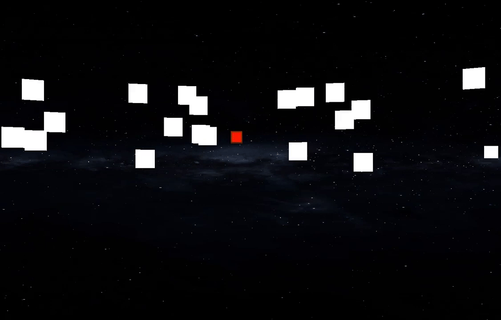

TARgETS
Targets is an online, multiplayer, action game where players compete to shoot the most targets that spawn around all of them as quickly as possible.
The client-side is written in C++ using OpenGL and GLFW, while the server side is written using Java Sockets.
Primarily developed on Windows 8.1 using Microsoft Visual Studio (.sln file included), but also tested on Ubuntu 18, building using CMake.
Really should run on any *nix systems that have GLFW installed, but mileage may vary.
Ubuntu will probably need libglfw3-dev and libglm-dev and similar packages are availible for brew on Mac I think.
Developed by Kevin Kellar, initially as a quarter-long project for Professor Christian Eckhardt's Intro to Computer Graphics (CPE 471). Special thanks to Professor Eckhardt and Professor Zoe Wood for the base template code help start this project.
This project is hosted (or at least it should be) both on github and on Professor Eckhardt's Mixed Reality Lab.
Download and Play!
TARgETS is an online multiplayer game, so it may be a bit more difficult to just download and try out. The "client" games won't be able to run without communication with the server, even just for a one player game.
Download
Clone from GitHub
My project, hosted on GitHub will have the most up-to-date code availible.
# Clone with SSH
git clone git@github.com:kkevlar/TARgETS.git
# OR
# Clone with https
git clone https://github.com/kkevlar/TARgETS.git
Download Project as Zip
Download 'TARgETS' as a zip archive
Server Setup
The Server is a Java backend written using Java ServerSockets. It was originally developed using Eclipse, but can be run with a variety of java tools.
Recommended Process:
- Clone/download the repo (see above)
- Install JDK 8 and
- Either: Ant or Eclipse
- Run the server
cd server && ant build && bash ./runserver- Run ShootServerMain.java in Eclipse
Client Setup
Depending on the version downloaded, the client will either be configured to connect to localhost or kevinkellar.com.
If the server (see above) is running on the same machine as you intend to run the client, then change (or leave) the client configuration to use localhost.
Recommended Process:
- Determine the ip of wherever the server is being hosted.
- If the server is on the same machine as the client (
localhost), then use127.0.0.1. - Do not use the "domain" version of the server. The *nix client can't do DNS lookup for whatever reason. Just provide the IP.
- If the server is on the same machine as the client (
- Change the IP at the top of webclient.cpp to the IP from step 1.
#define SERVER_ADDRESS "127.0.0.1"
Open the .sln file in Visual Stuio, or use CMake.
cd client
mkdir build
cmake ..
make -j4
./targets
Gameplay
All players remain in the center of the "field", but can turn to face any direction within the cylinder of targets spawning around them.
Controls
| Action | Key |
|---|---|
| Turn Left | A |
| Turn Right | D |
| Shoot | Left Click |
| Shoot Burst | Right Click |
Winning Player
The player with the highest score will have a yellow halo pulsing around their cursor. See the image below which shows a regular shot (Left Click), burst shot (Right Click), and the halo around the red cursor.

Gallery and Technical Details
Initial Networked Game
Much of this project's work was in making the networked game from scratch. The image below shows four players all running on the same machine, with their cursor positions mirrored for all other players.

Cube Spawn Animation
Splash Screen Animation
The splash screen has normal mapping, specular lighting, and makes use of instance rendering.
Feel free to tweak the values in Billboard.cpp to try out different animations.

Sky-Cylinder
Instead of a skybox, the project makes use of a sky-cylinder, where the space texture is mapped along the inside of the cylinder, as if it was unrolled to be a rectangle. Should be less distorted-looking for a long, rectangular skybox texture.
Scoreboard
The scoreboard has not been implemented yet. The currently-winning player has a halo.
Cpp Module Details
| Module | Description |
|---|---|
| Billboard | Handles the splash screen and its animations |
| Collision | Encapsulates the collision-detection algorithm |
| Cube | Contains a variety of important classes, including the Target class and InterpObject class (parent of Target). There aren't any classes called Cube anymore. |
| Laser | Unimplemented so far |
| main | Handles most of the gameplay and setup |
| message | Handles incoming and outgoing messages to the server, including datatype serialization |
| Shot | Simple class which represents one of a player's shots |
| ShotManager | Handles the updating and rendering of every shot in the game |
| Skybox | :) |
| webclient | Super messily handles the actual connection with the server, including message serialization and deserialization. |
Troubleshooting
| Error | Suggestion |
|---|---|
recv failed with error: |
The client can't connect to the server. Check server configuration / setup (see above). |
Contact
Feel free to email me at Kellar dot Kevin at Gmail with any questions about the project. :)